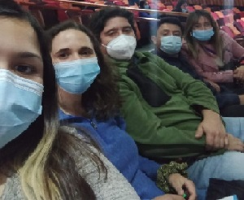
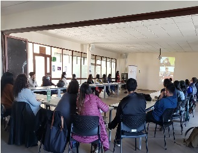

Currículum Vitae.
Jennifer Castillo.
- Resumen.
Mi nombre es Jennifer Castillo, tengo 30 años y nací en un pequeño pueblo llamado Llay Llay en la V Región.
En la actualidad vivo en la ciudad de Viña del Mar junto a mi pareja Gustavo y mis dos gatos, Gon y Floki.
Soy una persona relajada e introvertida, me gusta dibujar y pintar, amo la música, en especial el rock y
metal. Desde niña he estado rodeada de piezas de computadores ya que mi papá armaba computadores para venderlos,
por lo que siempre se me ha dado con mucha naturalidad el uso de la tecnología. Conocí el mundo de la programación
gracias a mi hermano quien es informático y se desarrolla como programador backend en una empresa de desarrollo de
sofware. Soy Trabajadora Social, disciplina que me a enseñado respecto a la socialización y la importancia de las
relaciones humanas para la vida y la felicidad.
- Datos Personales.
- Nombre: Jennifer Castillo
- Rut: 18.240.892-1
- Fecha de Nacimiento: 11 de septiembre de 1992
- Formación.
- 1999/2005 Ed. Básica completa. Colegio María Letelier de Prieto Religiosas Filipenses.
- 1999/2005 Ed. Básica completa. Colegio María Letelier de Prieto Religiosas Filipenses
- 2006/2010 Ed. Media completa. Liceo Particular Mixto San Felipe.
- 2013/2017 Ed. Superior. Universidad Andrés Bello. Carrera de Trabajo Social
- 2017/2018 Ed. de Postgrado. Diplomado de intervención Familiar, Pontificia Universidad Católica de Valparaíso.
- 2020 Ed. de Postgrado Diplomado Enfoque Comunitario y Niñez, Pontificia Universidad Católica de Valparaíso.
- Capacitación Habilidades Preventivas Parentales, Servicio Nacional para la Prevención y Rehabilitación del Consumo
de Drogas y Alcohol.
- Manejo sistemas informaticos de programas sociales.
- IBM SPSS Statistics Nivel Medio.
- Sistema de Registros y Monitoreo Programas Calle, Caminos, Vínculos.
- Sistema Programa Familia Seguridades y Oportunidades.
- Sistema de Monitoreo y Seguimiento Chile Crece Contigo.
- Sistema de Información, Social de Emergencia SISEL.
- Sistema de Gestión Social Local GSL.
- Experiencia Laboral
En la Actualidad me desempeño como Trabajadora Social en Senda Previene en la comuna de Quilpué, donde trabajamos
para disminuir y prevenir el consumo problemático de alcohol y otras drogas. Trabajamos junto a mi equipo
multidisciplinario compuesto de seis profesionales con los que trabajamos en diferentes áreas de intervención como
comunidad, familia, educacion, y laboral. Mi labor se centra en trabajo directamente con Profesionales de la educación
y NNA dentro de Establecimientos Educacionales de la comuna de Quilpué.
- Marzo2022/Actualidad. Trabajadora Social en Dupla Psicosocial del Servicio Nacional de Prevencion del consumo de Alcohol y Drogas.
- Julio2021/Diciembre2021. Apoyo Familiar Integral Programa Familias de FOSIS y el Ministerio del Desarrollo.
- Enero2019/Junio2021. Trabajadora Social en “Programa Abriendo Caminos” San Felipe. Ministerio del Desarrollo.
- 2018 Octubre. Encuestadora de “Estudio Satisfacción Multicanal de Usuarias/os del IPS con Enfoque de Género 2018.
- Enero2016/Marzo2016 Monitora en Proyecto Escuela de Verano, Escuela Héroes de Iquique. Llay Llay.
- Enero2015/Marzo2015 Monitora en Proyecto Escuela de Verano, Escuela Héroes de Iquique. Llay Llay.
- Marzo2013/Marzo2013 Encargada de Finanzas en Centro de Estudiantes de Trabajo Social Universidad Nacional Andrés Bello.
Equipo de Senda Previene Quilpué


Haz clic aquí para conocer mi Linkedin
Acceso a Portafolio